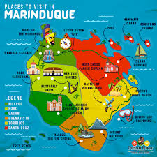

Where in the World Is Marinduque?
A heart-shaped island at the geographic center of an entire archipelago — the Philippines' most precisely placed province.

The Center of the Philippines
Marinduque is an island province located in the MIMAROPA (Mindoro, Marinduque, Romblon, Palawan) administrative region of the Philippines. It lies roughly in the central part of the Philippine archipelago, surrounded by the Sibuyan Sea to the north and east, and the Tayabas Bay and Tablas Strait to its other sides.
The island sits approximately 130 kilometers south of Manila as the crow flies, and is separated from the Bondoc Peninsula of Quezon province by a narrow strait. Its nearest neighbors are the islands of Luzon to the north, Romblon to the east, and Oriental Mindoro to the west.
What makes Marinduque's geographic position extraordinary is that it hosts the Luzon Datum of 1911 — the official geodetic reference point from which all horizontal surveys and maps of the Philippines have been calibrated. In a very literal sense, this island is the center from which the entire country is measured.
Location Facts
A Heart-Shaped Landscape
From above, Marinduque's shape is unmistakably heart-like — a fact that has earned it the affectionate nickname "The Heart of the Philippines." This silhouette is formed by the natural coastline and two prominent bays that curve into the island's interior.
The terrain is predominantly mountainous and hilly, with Mount Malindig — an active stratovolcano rising to 1,157 meters — dominating the island's skyline. Dense tropical forest covers much of the interior, giving way to coconut plantations, rice paddies, and fishing villages along the coast.
The island has several river systems, most notably the Boac River which flows through the capital. Coastal waters are rich with coral reefs, particularly around the Tres Reyes Islands and the shores of Gasan and Santa Cruz, making it a notable destination for marine biodiversity.
Marinduque has no land border with any other province — it is entirely surrounded by sea, giving it the distinct, self-contained character that defines true island communities.

How to Reach Marinduque
By Ferry (Most Common)
Take a RORO (Roll-On, Roll-Off) vessel from Lucena City's Dalahican Port to Balanacan Port in Mogpog. The crossing takes approximately 3 to 4 hours and runs multiple times daily. This is the most affordable and popular route for both locals and tourists.
- From Manila → Lucena via bus (3–4 hrs via SLEX)
- Lucena Dalahican Port → Balanacan, Mogpog (3–4 hrs)
- Multiple daily departures; bring cash for tickets
By FastCraft
A faster sea option departs from Pinamalayan, Oriental Mindoro to Buyabod Port in Santa Cruz. This route is useful for travelers coming from Mindoro or wanting to skip the longer Lucena crossing. Journey time is roughly 1.5 to 2 hours.
- Pinamalayan, Oriental Mindoro → Buyabod, Santa Cruz
- Faster but pricier than RORO ferry
- Check schedules — runs on select days
By Light Aircraft
The Boac Airport accommodates light aircraft from Manila on select scheduled and chartered flights. This is the quickest option but operates on limited days and carries fewer passengers. Ideal for those prioritizing time over cost.
- Manila → Boac Airport (approx. 40 minutes)
- Check with light aviation operators for current schedules
- Limited seating — book well in advance